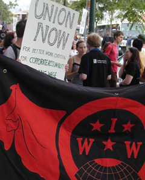
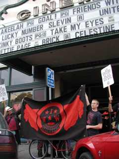

Submitted on Tue, 07/18/2006 - 4:32am
Shattuck Workers Rally on Saturday July 22 at 2pm at Shattuck Cinemas, 2230 Shattuck Ave, Berkeley.
Shattuck Cinema workers voted 22-2 to authorize union representation on June 16. Contract talks are set to begin Thursday, July 20th. Over the course of the union campaign Shattuck Cinema workers have received support from the local community which they know is essential to pressure Landmark Cinemas, which owns the the Shattuck, toward open and honest negotiations.
Amongst the workers demands are: paid sick days, health benefits, a chair for the ticket takers, and a living wage. Currently, the starting wage at the Shattuck is a mere $7.25 and hour, while the City of Berkeley's official living wage is $11.04 an hour. Most employees do not earn more than $8.00 an hour regardless of years of service or job performance. The company prefers what they call "Merit Raises". Annual Raises amounted from a $.03 to $.06 an hour increase for most employees last year.
Submitted on Sat, 07/15/2006 - 5:26pm
 What happens when you have four dues paying wobblies, plus one treasurer of the SF Bike Messenger Association, plus one old wob from the 70’s, and a boss that could care less about the messenger division, all in one shop? In the case of Quicksilver Messenger in San Francisco—anything you want—and it was very easy.
What happens when you have four dues paying wobblies, plus one treasurer of the SF Bike Messenger Association, plus one old wob from the 70’s, and a boss that could care less about the messenger division, all in one shop? In the case of Quicksilver Messenger in San Francisco—anything you want—and it was very easy.
We have just gone from being one of the worst messenger companies in the industry, to one of the best (and legal companies don’t count, since they charge their clients an arm and a leg). Actually, we haven’t gotten the paycheck to prove it yet, but it should be coming shortly.
We wanted our rates to be increased. We also wanted to change the zone map, because it was just not worth it to go to certain places. The fact that a delivery to Van Ness and Market gets you the same amount of money as a delivery to California and Divisadero is (I mean—was) completely ridiculous. And to add insult to injury, we were not even getting the 49% commission rate we thought we were getting because the company would first subtract a booking charge, making our rate more like 35-40%. That is illegal by the way, but we are going to let bygones be bygones, since from now on, we are going to be getting a straight 49% commission.
Submitted on Fri, 07/14/2006 - 11:58pm
By Mary Loritz - July 14, 2006
Workers from Shattuck Cinemas emerged victorious in their fight for a union after voting 22-2 in favor of unionizing with the Industrial Workers of the World. Their union drive became public on May 8th, and a little over a month later, on June 16th, they had a union.
Congratulations! It was a fast process that wouldn't have been possible without community support. The Shattuckunion is an inspiration for cinema workers everywhere who are receiving poor pay with little or no benefits. However, many of the workers' biggest concern was never whether they would gain recognition as a union, but how the company would respond during contract negotiations. Landmark Theatres has been generally unresponsive to the campaign -- they've been unavailable for comment whenever questioned. Their attorney recently responded to the union's demand to bargain letters, and both sides are now preparing for contract negotiations. The union's main objective right now is to get a fair contract - and in a reasonable amount of time.
Submitted on Mon, 07/10/2006 - 3:33am
PITTSBURGH, PA—A clear majority of workers have chosen union representation at the East End Food Co-op, Pittsburgh’s only member-owned natural and organic food market. The East End Food Co-op Workers Committee, affiliated with the Industrial Workers of the World (IWW), held an independent union authorization card count after their employer refused to accept the workers’ signed cards as democratic proof of union support. The Thomas Merton Center, a well-known and respected peace and social justice organization since 1972, facilitated the card count and verified the results on July 6, 2006.
On behalf of the Thomas Merton Center, Board member Michelle Burton Brown stated in a written declaration of confirmation, “The East End Food Co-op Workers Committee, an affiliate of the Industrial Workers of the World (IWW), has obtained a clear majority of workers who wish to have the IWW serve as their exclusive bargaining agent for the purposes of negotiating a collective bargaining agreement covering wages, hours, and all other terms and conditions of employment with their employer, the East End Food Co-op.”
“We couldn’t be more pleased with these results,” said Hope Anne Nathan, a Co-op worker. “We’ve worked really hard to reach out to all of our co-workers and discuss the union so they could make an informed decision. Workers’ support for the union was obvious to us. Now we’ve clearly proved it with a neutral, third-party counting the cards and recognizing the Workers Committee as the bargaining agent.”
Evan W. Wolfson, another Co-op employee said, “The law doesn’t yet compel employers to accept the results of an authorization card-count, but we’re certain that most Co-op’s shoppers and advertisers understand what happens when workers feel disrespected and voiceless. The quality of the Co-op is going to suffer if management doesn’t start listening to their employees.”
The Workers Committee began its organizing drive with the IWW on May 15, 2006 to improve working conditions, pay and benefits, and to address long-standing issues of low staff morale and high turnover. The Co-op employs approximately 50 workers who would be covered by a labor contract should the union prevail in its quest for legal bargaining rights.
At the June 26th meeting of the Co-op Board of Directors, the Board and General Manager heard several testimonials from employees and Co-op members overwhelmingly in favor of unionization and the card-check process. Without making a statement either for or against the union, the Board abruptly departed from it previous practice of dealing with the union and delegated authority and control over union matters to the store’s General Manager. Since then, management has disavowed the card-check process in favor of a secretive ballot election and has hired Braun Consulting Group, based in Seattle, Washington – a known union-avoidance firm with experience in dealing with union campaigns at consumer co-operatives.
Contact:
Stacey Clampitt - East End Food Co-op Workers Committee
Submitted on Mon, 07/10/2006 - 3:24am
Headlines:
- 115 unionists killed in 2005
- Australian Wobs call for general strike
- May Day actions kill anti-immigrant law?
Featured Articles:
- Grocery, cinema workers go IWW - IWW wins shops in Pittsburgh & Berkeley, conditions improving.
- Mexican workers’ heritage of struggle Teachers, electricity unions’ direct action fight
against neoliberalism.
Also - reports of workers' struggles in Mexico.
Download a free PDF Copy of this issue.
Find out how you can support the Industrial Worker.